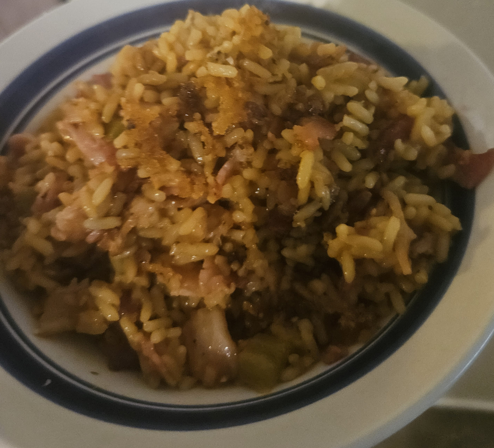

Bacon & Rice
Ingredients and Equipment
- Cooked Rice
- Bacon
- Chunky Salsa or Fresh Vegetables
- 1 or 2 pans of your preference
- Your handy grease jar
- Tongs
- Spatula
The Plan
The Goal in this Recipe is to fry rice in the bacon fat, turning your leftover rice into a
rich
savory bacon dish with the crunch of vegetables and bacon
The Process
- Cook the rice yesterday. Conventional Wisdom says fried rice is best from day old rice
- Cook bacon in the pan of choice.
- Pour excess bacon fat into a jar NOT. THE. DRAIN.
- If you're using fresh veggies place them in now to get a minute or two head start!
- Cook the rice in the bacon pan (or another pan with the remaining bacon grease) for 3 minutes
- If you're using salsa pour it in now and let it simmer for a minute
- Serve!

Doesn't that look good? Maybe that serving was a little too greasy.